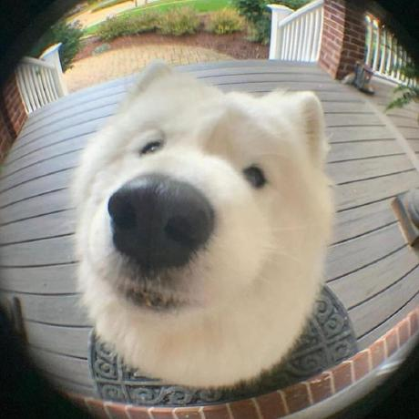

yodel
Привет! Меня зовут Арсений и мне 18 лет. Я начинающий разработчик с 2+ годами опыта в создании веб-приложений и скриптов. Пишу на C/C++, Python, Java, JavaScript и React. Учусь в СевГУ с 2025 года. Люблю элегантный код, чистую архитектуру и фиолетовые акценты 🌌
В настоящее время не работаю ни в какой компании, тружусь только на заказы и на себя. Верю в силу хорошо продуманного и написанного кода и сообщества.
Проекты
Возможно не такие огромные, но важные для меня проекты

yodel
Непосредственно данный сайт-лендинг. Написан на скорую руку на HTML+CSS с элементами JavaScript
github.com

SevSU Repository
Репозиторий со всеми моими работами, связанными с работой на ПК (например коды, отчёты)
github.com